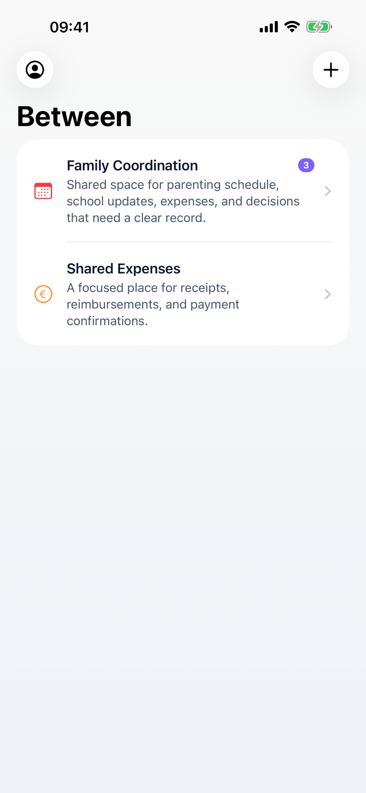

Focused topics
Keep each conversation attached to one subject, with clear open, unresolved and resolved states.
Co-parenting conversations, organized
Create focused conversations for school, appointments, expenses, handoffs and decisions that should not get lost in a long message thread.

Built for calmer coordination
Between helps separated parents and co-parents keep important messages, files and decisions easier to follow.
Keep each conversation attached to one subject, with clear open, unresolved and resolved states.
Add images, PDFs, spreadsheets and documents so important details stay with the decision.
Review sensitive messages before sending, then follow unread updates across conversations.
Between aide les coparents et parents separes a garder leurs echanges importants plus organises, plus calmes et plus faciles a suivre.
Creez une conversation par sujet, ajoutez les fichiers utiles et marquez une conversation comme resolue quand une decision est claire.